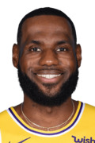
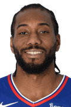
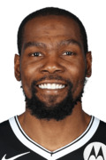
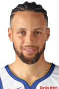
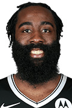
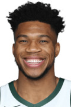
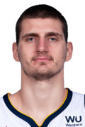
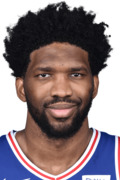
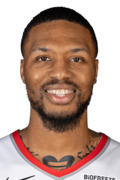
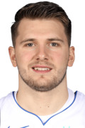

Top 10 Player Rankings
last updated 30/04/21

1. Lebron James
I know Lebron has been out for a bit now, but before he went down he still looked like the best player in the NBA, even despite the quick turnaround from the bubble playoffs. Other players on this list have had more impressive seasons, but I have yet to see anything which would point to them dethroning Lebron.
It hurts me to keep Lebron at this spot, but I can't deny that he still has the most lethal combination of driving ability, passing ability, and basketball IQ to make him the best player in the NBA.

2. Kawhi Leonard
I know many may disagree that Kawhi deserves this spot, considering his collapse in the playoffs last season. On top of that, he has been fairly under the radar this season, putting up great numbers as usual, but nothing that would blow you away.
Despite all of that, Kawhi's scoring ability combined with his defensive prowess make him a good choice for the second best player in the league. Sure, he will still need to show that he can be a great ball handler and playmaker for the Clippers to regain their status as title favorites in many peoples' eyes, but to me he is still the best two-way player in basketball, and that's enough to put him this high on the list.

3. Kevin Durant
If not for my concerns about Kevin Durant's health, I would probably have him at the number 2 spot. He has been really impressive when we've seen him in action this season, and I still have no qualms about calling him the best scorer in the league. That scoring ability alone, along with his ability to move off-ball and pick his spots in the Nets offense, are easily enough to vault him past the rest of the players on this list. But I do have questions about how his injury will affect his defensive ability, and in general I need to see him hold up in the playoffs.

4a. Steph Curry
It's hard to tell whether this is a controversial position to take. Some people clearly have Curry as a lock top 5 player, with some even saying he belongs in the same class as KD and Lebron. Others look at this season as evidence that Curry can't lead a team to the playoffs. Since I've watched his games the most out of any player on this list, here are my thoughts.
On one hand, this season has shown that Curry can make incredibly tough shots, and that paying him more attention on defense isn't going to simply "shut him down". He can get his on most nights, because he will take and usually make really tough shots. This shotmaking, along with his elite ball handling and finishing ability, are what make him still an easy top 5 pick.
On the other hand, there is a gap between those top 3 players and Curry, because of his height and his iso skill. Curry's height is a limiting factor when it comes to getting him the ball. Great defensive schemes can often deny Curry the ball, and while his gravity is impactful even as a decoy, I still won't hesitate to force Kelly Oubre, Jordan Poole, or Andrew Wiggins to beat me offensively. Curry can't always just shoot over defenders, and he has no post up game, so it's hard to put him much higher than 4th on this list, no matter how much I love the way he plays.

4b. James Harden
I owe James Harden an apology. Before the season, I wouldn't have had him as a top 5 player because of his playstyle and what I perceived as overrated passing IQ, given how he often passes to guys late in the shotclock after dribbling for 20 seconds, and racks up inflated assist numbers. I didn't think Harden could play a different way, and I was flat out wrong. Harden has been playing some of the best basketball of his career in Brooklyn, and he has elevated that offense in a way I didn't foresee coming.
The fact that I have Harden as "4b" is meaningless, you could switch him and Curry and I really wouldn't care. Harden's scoring ability and passing ability are easily enough to ensure he's a lock top 5 player, and I look forward to seeing how he builds upon this season in the playoffs.

6. Giannis Antetokounmpo
Perhaps I'm underrating Giannis because he's not at the forefront of the MVP discussion this season. In previous years, his impressive seasons had me ranking him as a top 3 player, but I think I'm just numb to the impact he has at both ends with impressive numbers and DPOY quality defense. As an all around player, Giannis probably checks more boxes than Curry or Harden because of his length and defensive impact. But until I can trust him as a shooter (not even a 3 point shooter, but a reliable midrange jumper/post game), I just don't know what kind of impact he'll have in the playoffs. He hasn't shown me anything this season that suggests that he's drastically improved on those fronts, so these playoffs are big for determining where he lands on this list.

7. Nikola Jokic
I so desperately want to put Jokic higher on this list, because I love the way he plays. He has one of the highest basketball IQs and passing skillsets in the league, and I can't deny his impact on the offensive end. I had him as my MVP prediction coming into the season, and he's still exceeded my expectations.
But there are two things that keep me from placing him higher on this list: defense and ball-handling. I don't need to elaborate on the defense aspect, his lack of lateral quickness makes him a poor defender, especially on the perimeter. But Curry and Harden have similar problems, and they're higher on this list, because of their ball-handling ability. Perhaps I'm biased towards guards, but I can trust Curry and Harden to simply take a defender off the dribble and make something out of nothing. With Jokic, he has to establish post position for him to be at his most effective, or he needs a great ball handler like Murray for a pick & roll / pick & pop play. I will definitely be watching the Nuggets these playoffs to see how effective Jokic can be without Murray, and I'm hoping he continues to exceed my expectations.

8. Joel Embiid
I'm sure plenty of people would disagree and place Embiid above Jokic because of his prowess as a rim protector and decent ability to defend the perimeter. But Embiid is a poorer shooter than Jokic, which really impacts his ability to space the floor and make defenders pay for gapping him defensively. He's also not nearly the passer Jokic is; while he can certainly pass out of the post, he's not going to hit cutters nearly as effectively as Jokic will. Lastly, and perhaps this is an unfair point for a list like this, but I trust Jokic's health far more than Embiid's. Jokic's game doesn't place nearly the strain than Embiid's does on his body, and I can trust Jokic to remain healthy. I'm hoping Embiid can prove otherwise these playoffs and lead Philly to a deep playoff run, but I have more faith in Jokic in that regard.

9. Damian Lillard
For the last 2 minutes of a game, I'll gladly put Lillard at the #2 or #3 spot on this list. He isn't afraid to take really tough shots, and he usually hits the ones that matter. In a close game down the stretch, I'm not counting against Lillard.
But for the first 46 minutes of a game, I absolutely am. For the first 46 minutes, Lillard is really just Steph Curry lite, not as efficient a shot maker, not as efficient a finisher, not as elite a ball handler, and not as much of a threat off ball. It's not a perfect comparison because he does play on the ball more, trading some of the catch and shoot shots for simpler iso or pick and roll plays. But if I had to pick a guy to build a team around, I'm absolutely picking Steph. Lillard's shotmaking and ball-handling aren't enough to vault him to top 5 status, and though he is one of the clutchest players in the league, I'd rather take guys with more elite & versatile skillsets.

10. Luka Doncic
Much like Lillard is mostly Steph Curry lite, I think Doncic is James Harden lite. But Luka isn't that great of a shooter, unlike the other three guards I mentioned (though he has improved a bit this season), so I'm ok leaving him open for that stepback three he loves to fire.
Doncic has the potential to vault really high up on this list, but he's the least established star out of anyone here. I really need to see more from him these playoffs before I move him higher on this list. Call me a Luka hater if you want (which is funny because he's probably my second favorite player on this list), but I'm just a bit cautious about ranking him based on what I think he can be. That could change after these playoffs, but we'll have to see.
Notable Exclusion: Anthony Davis
I need to see what AD looks like in these playoffs, as I really don't want to put too much stock into what little I've seen this regular season. With the short turnaround from the bubble playoffs, I don't think he's been nearly at his peak, but he'll have to be for the Lakers to win the chip this year. Before the season AD was clearly in my top 5, and he can return there if he impresses me again these playoffs.